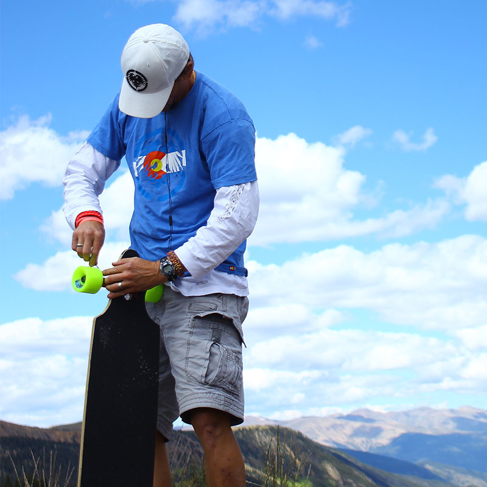

<div id="content">
  <div id="main">
    <div class="container">
      <div class="one_third">
						
      </div>

      <div class="two_third last">
						<h1>Dave &quot;The Bear&quot; Morton</h1>
						<p><strong style="font-family: Helvetica;">MEET THE BEAR...&nbsp;</strong><span>Grew up dirt jumping, riding/racing BMX and skating. Loves to snowboard and the backcountry. Long boarding was a way to keep snowboarding skills alive     and grew into a love of downhill long boarding. Also enjoys Twister and tuna melts!</span>&nbsp;</p>
						<p><strong><u></u></strong> </p>
						<p><strong style="font-family: Helvetica;">DAVE'S&nbsp;FAVORITE NS BOARD IS...&nbsp;</strong>My quiver consists of the Avalanche and Reaper. The Avalanche gives that enhanced stability and the micro drop rocks! It provides a quiet ride due to the composite
							and veneer. The Reaper has an amazing feel of control and provides a reliable ride I can count on.&nbsp;</p>
						<p>
							<br /> </p>
					</div>

          <hr>


    </div>
  </div>
</div>